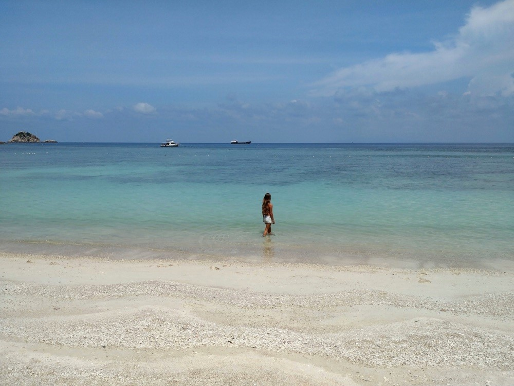

What and when was your first experience in software development/programming?
When I was a kid I had a computer that I would use to play games like Roller Coaster Tycoon and Theme Hospital and download music to make CDs for my friends, but I wasn't a super young coding genius and I only started programming when I was 18!
I learned some basic C++ programming from my boyfriend who was studying Software Engineering. He helped me write my first program - a simple calculator, but unfortunately he wasn't very supportive and suggested that I didn't have good enough problem solving skills to be a developer.
I went to University to study Law and Criminology because I thought it would lead to a high paying prestigious job, and if I'm honest I liked the idea of telling people I was studying Law! I dropped out after 1 semester because the course wasn't for me and I wasn't happy. I moved back to the village where I grew up and started working in a local shop.
This was a definite low point in my life. I had left this life behind 3 years ago and now I was stuck back in it. My friends and family reminded me that I liked computers so I could go and do something with that. I decided to submit a last minute application to study Computer Science, and I was accepted!
With the right support and encouragement I fell in love with coding. I finished 4 years at University and landed a graduate job with the UK Government!
What motivated you to start Squarecat?
In December 2016 me and my partner James left the UK to go travelling. The original plan was to travel for one year, but after 6 months we were loving the nomad lifestyle and knew we wanted to travel for longer. If we were going to do that we needed to earn some money.
Our first work opportunity found us in Chiang Mai, Thailand. We were working in a cafe and a man approached us asking if we were developers and if we'd like to do some work for him. We said yes and that's how we landed our first client!
If we wanted to take on freelance work we decided it would be a good idea to start an agency officially. This is when the idea for our company Squarecat was born.
Why and when did you decide to build an open startup?

We are building Leave Me Alone completely in the open. It started with sharing some designs and a basic landing page on Twitter. When that received positive feedback we continued and to this day we have shared all of our decisions, build processes, successes, failures, and revenue stats openly.
We have launched a few products which have failed and we believe this to be primarily because we weren't sharing our decisions and asking our customers what they wanted.
To learn about startup founding I read blogs from successful founders like Josh Pigford (Baremetrics) and Sahil Lavingia (Gumroad). These two people are successful now, but the journey to get there was paved with failure and it continues to be difficult.
Reading about other founders experiences really helped me at my low points to know I wasn't alone in my doubts and struggles, and that it's okay to fail so long as you learn from it. With Leave Me Alone we have shared everything and it's been so valuable to get positive feedback on our successes but also support and encouragement on our failures.
We wouldn't have been able to do most of this without two incredible communities which have changed everything for us - Makerlog and Women Make. These are communities of like minded people with whom we socialise, share ideas, get feedback, and help each other.
Being a part of these groups was a huge factor in our decision to build an open startup; we saw how positive it was for our product for customers to be a part of building it.
What are the best and worst things about working for yourself?
The best thing is being able to control your own schedule. James and I work better at different times of the day. He is more productive in the mornings so he often works for a few hours before I wake up, and I am more focused in the afternoons so it's common for me to be coding into the early evening when he has finished for the day.
Being in charge of when we work also means I don't have to force myself to work if I am not being productive. If I am having a bad day or I can't solve a problem I will stop working for a few hours, wander around the city or go to the beach and either pick up work later that evening or continue the next day. So long as the work gets done it doesn't matter what hours we work.
The best things can also end up being the worst. Being in charge of our own schedules also makes it harder to switch off. This is made even worse by working from SE Asia as most of our clients and customers are in the West - making our evenings when support requests or questions come in.
Being accountable for our own time also means we experience guilt for not working harder or longer. This can be difficult to combat and we have been close to burnout before because we took on too much work and didn't switch off or take enough time for ourselves.
How do you stay motivated and focused while travelling?
Travelling actually makes it easier for me to stay motivated. When I work from different places every day my brain stays focused for longer and I am more creative and productive. We have tried working from co-working spaces but paying a daily rate means we feel obligated to spend all day, every day there, which feels too much like going to an office every day and for us, kills our productivity!
Which countries have you visited so far?
We have been travelling for nearly 3 years so far!
We spent 1 year in South East Asia with 1-2 months each in Thailand, Laos, Cambodia, Vietnam, Malaysia, Indonesia, and the Philippines (there are blog posts about all of these places here). We lived in a campervan in Australia for 4 months and visited New Zealand for 1 month in the middle.
Then we missed Europe so we spent a few months in Berlin, visited the UK for four weddings, and a month visiting cities in Estonia, Latvia, Lithuania, and Poland.
Then we travelled South America for 6 months and went to Argentina, Chile, Bolivia, Ecuador, Peru, Colombia, and we took a vacation from work to scuba dive in Utila, Honduras for 2 weeks.
We spent another summer in Europe in Budapest and Berlin, and now we are back in SE Asia where we spent 2 months in the Thai islands (Koh Phangan, Koh Tao, and Koh Samui), a month in Malaysia, and we are heading to Indonesia to spend the rest of the year in Bali and the Gili Islands.
Which tech stacks do you use?

All of our projects are built using the MERN stack - Mongo, Express, React and Node. These are the technologies with which we are most familiar. I always recommend using whatever tools you know as you will be able to build faster using them.
What is your process from project idea to live application?
I always set out to solve problems that I am facing myself. The best products come from solving your own problems because you understand the requirements.
I aim to get feedback on an idea as soon as possible because there is no point building something if no one wants it. My first step is to build a very basic version of the app that has the core functionality and does it really well. For example, when we built Leave Me Alone we released a prototype that would list all of the subscription emails you had received in the past week and let you click a button to unsubscribe from them - no fancy features, just the core functionality.
Once I have something working I share it with the development community and on Twitter to get feedback and determine if the idea is going to work. Some people believe that launching is the best idea validation you can get, but I believe in releasing the product early and iterating publicly to get real users before launching.
What top tips would you give to newbie and junior developers?
Never stop asking questions.
I was criticised in my first job for asking too many questions when I didn't understand something. This was an incredibly negative experience and took several years to recover from.
If you don't know something, whether it is the technology, terminology, or anything else just ask. You won't learn by sitting quietly and pretending you understand. Just make sure you listen, absorb the information, and write down the answers to avoid asking the same questions again.